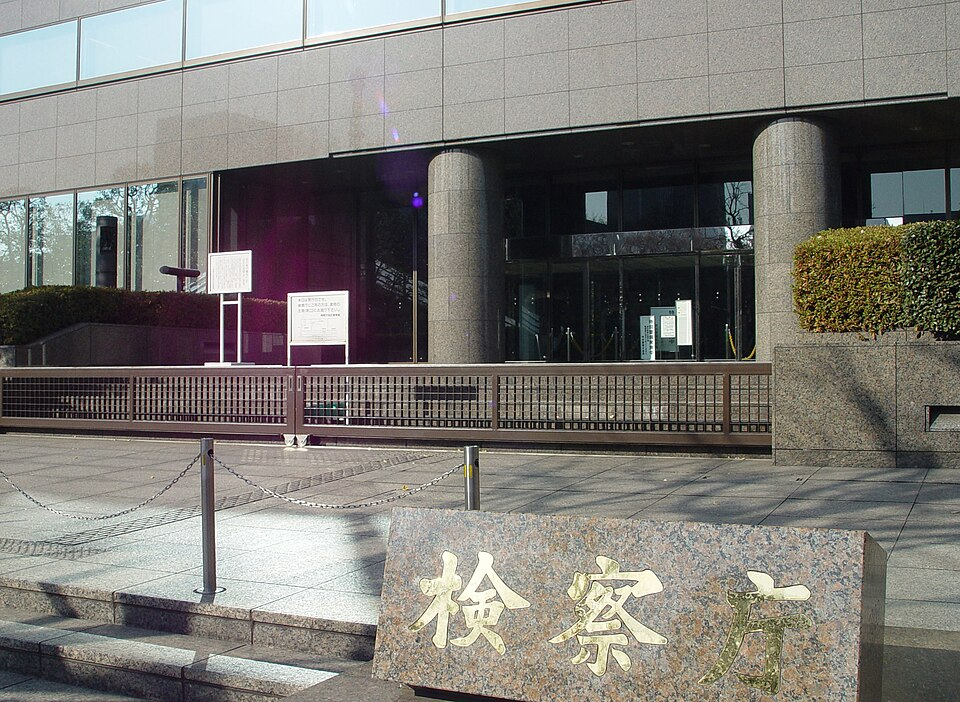
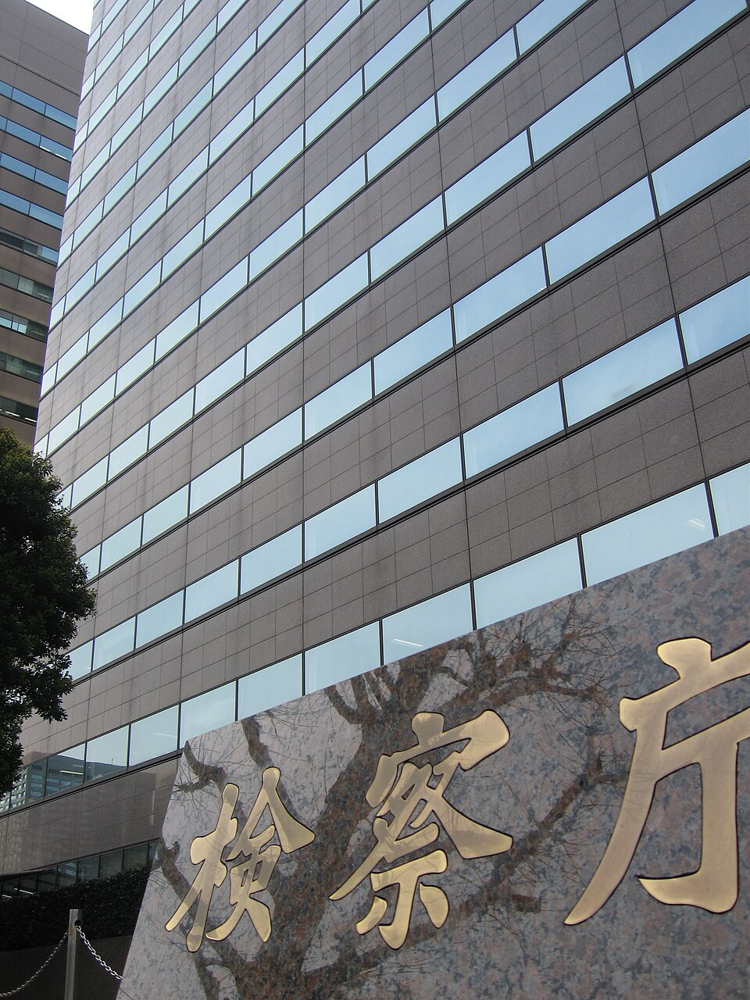

.jpg){kind=link}
井
井川意高
いかわ・もとたか
代表取締役会長・子会社代表取締役
役割：7社から106億8,000万円を借り入れ、個人的用途に使ったと認めた
その後：特別背任罪で懲役4年が確定8
2010年〜2026年11月15日
井川意高元会長は、2010年5月から2011年9月まで、大王製紙グループ7社から計26回。総額106億8,000万円を無担保で借り入れた。1
3社からエリエール商工を経由した22億5,000万円は、直後に井川氏個人口座へ移ったため、調査委員会は実質的な個人貸付と認定した。借入金の大部分は私的なカジノ賭博に使われたと調査・報道されている。2
赤平製紙からの社内報告を契機に全容が判明し、井川氏は会社法違反・特別背任罪で懲役4年となった。2012年には北越紀州製紙が創業家保有株式を取得し、資本関係の整理が進められた。2
大王製紙では、創業者の井川勢吉以来、井川家が経営と株式を長期間にわたり支配していた。事件当時、井川意高は大王製紙の代表取締役会長であり、複数の連結子会社でも代表取締役を務めていた。父の井川高雄は元顧問、弟の井川高博は関連事業担当取締役で、ファミリー企業も大王製紙と連結子会社の議決権を保有していた。会社の再発防止資料は、この親族とファミリー企業がグループで極めて大きな影響力を持ったことを問題の背景としている。1
平成23年10月28日付「大王製紙株式会社元会長への貸付金問題に関する特別調査委員会の調査報告書」（以下「調査報告書」という）において、今回の問題は、創業者以来経営権を継続して掌握し当社グループを大きく成長させてきた元会長の実父である元顧問、元会長、元会長の実弟である元関連事業担当取締役及びそのファミリー企業が当社の大株主であることに加えて、連結子会社の議決権の過半数を保有することにより、当社グループにおいて極めて大きな影響力を有していたことに起因すると指摘されております。
意味：会社側の再発防止策は、個人の賭博だけでなく、父・兄弟・ファミリー企業による支配構造を発生原因として明示した。
2010年5月12日、井川氏はグループ会社から最初の資金を借り入れた。2011年9月6日までの約16か月間に、ダイオーペーパーコンバーティング、エリエールペーパーテック、大宮製紙、いわき大王製紙、赤平製紙、エリエールテクセル、富士ペーパーサプライの7社から、計26回。106億8,000万円を借り入れた。井川氏は子会社の常勤役員に電話で金額と振込先を指示し、一部の役員には口外しないよう明言した。役員の大半は個人的用途と理解しながら使途を尋ねず、すべて無担保で送金したと調査報告に記録されている。2
2011年3月末の貸付残高は連結子会社2社で約24億円だった。その後、2011年4月から9月までに7社から約60億円が追加で貸し付けられ、返済は約29億円と会社は説明した。7月14日までの返済累計は47億5,000万円であり、現金だけでなく子会社株式とエリエール総業株式の購入代金を充てる方法も含まれていた。貸付の回数と金額が増えても、親会社の取締役会で事前に一括して確認されることはなく、子会社ごとの送金として処理された。32
いずれの貸付についても，事前に元会長から７社の常勤役員に電話して同人が指定する金額を指定する本人名義あるいは「ＬＶＳインターナショナルジャパン」名義の銀行預金口座（注１）へ振り込ませ，あるいはエリエール商工に送金させたものである。元会長から会社の手持ち資金を確認した場合もあるが，「明日までに○億円を自分の口座に振り込むように」などと一方的に指示したものが多数である。その一部の役員に対しては，口外しないよう明言して口止めまでした。その振込の目的や使途は説明していないが，自分個人への貸付として行わせたもので，一応の返済予定日を話した場合もあった。これに対し指示を受けた役員の大半は，元会長の個人的用途に用いられるものとの理解で，使途を質すことすらせず，経理担当者らに指示して，自社の手持ち資金から元会長指示の金額を支出させて，指示された当日もしくは数日内に指定口座への振込を実行した。それらの貸付について７社の役員は元会長に担保を求めることはなく，すべて無担保で貸付が実行された。
意味：電話による一方的指示や口止めと個人用途の認識及び無担保送金という、権力関係の下での実行過程が具体的に記録されている。
7社のうち3社は、いったんファミリー企業のエリエール商工へ合計22億5,000万円を貸し付けた。しかし同額は直後に井川氏個人の預金口座へ振り込まれた。会社は後に、この貸付を形式上の会社間取引ではなく、実質的な元会長個人への貸付として訂正した。契約書は送金後に作成され、いずれの貸付も事前に取締役会へ諮られなかった。貸付目的、必要性、返済の確実性について実質的な検討がなかったと特別調査委員会は説明した。2
いずれの貸付についても，振込を実行した後に元会長との間で返済期限，一定の利率等を定めた金銭消費貸借契約書が作成されている。また，このような役員への多額の貸付は取締役会で決定されるべきものであるところ，いずれの貸付についても事前に取締役会に諮られることはなかった。別紙２一覧表記載のとおり，大半の会社では適法な取締役会が開催されず，取締役会に諮られることすらなかったし，貸付実行後に取締役会に諮られて承認された場合でも，貸付の目的，必要性，返済の確実性など当然行われるべき検討はされなかった。このように社内手続上としても適正になされたものはなかった（注２）。
意味：契約書が送金後に作られ、取締役会の承認や実質審査も欠けていたという、統制手続の形骸化を示す。
借入総額106億8,000万円に対し、47億5,000万円が返済された。内訳は現金18億700万円と、子会社株式およびファミリー企業とされたエリエール総業株式の購入代金を返済に充てる方法29億4,300万円だった。調査時点の未返済元金は59億3,000万円である。資金使途について、会社は2011年9月21日時点では不明と説明した。その後の調査資料では、マカオ、シンガポールなどのカジノでの賭博とされ。8億5,000万円がLVSインターナショナルジャパンに直接送金されたと説明されている。全体の個別内訳は未確認である。24
平成23年9月16日付「代表取締役の異動（辞任）に関するお知らせ」にて、当社元会長井川意高から、同日（16日）取締役を辞任する旨の届出があり、これを受理したとお知らせしておりました。本件に関し、事実関係と原因の調査、再発防止策の提言等を目的として、社内外の調査委員による特別調査委員会を設置しましたので、お知らせします。 これまでの社内調査で判明した内容は次のとおりです。 1）23年3月末時点で、当社連結子会社2社から元会長に対する貸付金の残高は約24億円である。 2）23年4月から9月までに、当社連結子会社7社が元会長に対して約60億円を貸し付けている。 3）23年4月から9月までに、元会長から当社連結子会社に対して、株式及び現金で約29億円の返済を受けている。 4）現時点で、当社連結子会社から元会長に対して約55億円の貸付残高がある。 5）上記貸付金の資金使途は不明である。
意味：会社が把握していた残高と追加貸付の規模を示しつつ、発覚時点では資金使途を説明できていなかった。
2011年9月7日、赤平製紙から大王製紙の関連事業部へ、井川氏の指示により9月2日に個人口座へ3億円を振り込んだとする社内メールが届いた。確認の電話で、エリエールテクセルからも同様の貸付があり、9月6日夜に5億5,000万円を振り込んだとの報告が伝えられた。関連事業部担当取締役が不在だったため、佐光正義社長に直接報告され、佐光社長の指示で他の関係会社の確認が始まった。これにより貸付が7社に及んでいたことが判明した。5
平成２３年９月７日午前１０時２８分ころ，赤平製紙から関連事業第一部担当者宛に社内メールが届いた。元会長から９月１日に指定口座に振込むようにとの指示に応じて，９月２日に元会長の個人口座に３億円を振り込んだ，との業務上の報告であった。折り返しで電話し確認したところ，エリエールテクセルでも同様のことがあり，同社も関連事業部に伝えたとのことであった。関連事業第二部担当者に９月６日夜に，同社から５億５０００万円を振り込んだとのメールが入っていた。関連事業部担当取締役が当日は不在であったので，佐光社長に直接に報告し、
意味：不正の全容は、子会社から届いた具体的な送金報告と、社長への直接報告を契機に表面化した。
2011年9月16日。井川氏は代表取締役会長と取締役を辞任した。会社は当時の貸付残高を約50億円と公表し、同日、特別調査委員会を設置した。井川氏と親族から株式などによる弁済の申し出があり、会社は当初、グループの損益への影響はないと考えていた。9月21日には残高約55億円、資金使途は不明と公表した。調査委員会は10月27日に報告書を提出し、問題の核心を井川家とファミリー企業の影響力、子会社役員が元会長に異議を唱えにくい体質。取締役会と監査の不全に求めた。11月21日、大王製紙は井川氏を東京地検へ告発した。657
会社の対応は、元会長個人への債権を回収する作業と、事件を可能にした統治関係を調べる作業に分かれた。特別調査委員会は、誰がどの時点で貸付を把握したか、なぜ取締役会の承認がなかったか。なぜ監査で繰り返しを止められなかったかを確認した。再発防止策では、創業家の株式と子会社議決権の保有、関係会社取引の承認、内部通報の報告先。社外役員を含む監査機能が論点になった。元会長の辞任だけでなく、佐光社長が関係子会社を横断して調査し、会社が自ら東京地検へ告発したことが。その後の刑事手続と過年度訂正につながった。12
当社の代表取締役井川意高から、本日（9月16日）取締役を辞任する旨の届出があり、これを受理しましたのでお知らせします。 ２．異動理由 連結会社から借入れをしていたが（現在残高 約50億円）、これにつきガバナンス上の問題があり、本人より辞任の申し出があったため。 ３．異動時期 平成23年9月16日（同日 代表取締役及び取締役を辞任しました。） 本日、本件に関する特別調査委員会を設置し、具体的な内容についての調査を開始します。 上記の貸し付けられた資金については、本人及び親族から弁済の申し出を受けており、当社グループの損益に与える影響はないと考えております。
意味：発覚直後、会社は問題を「ガバナンス上の問題」と公式に位置づけ、井川氏の辞任と特別調査委員会設置を同時に公表した。
2011年11月22日、東京地検特捜部は井川氏を特別背任容疑で逮捕した。会社の告発対象は85億8,000万円だったが、刑事裁判では子会社7社に55億3,000万円の損害を与えた特別背任が認定され、懲役4年が言い渡された。最高裁が2013年6月に上告を棄却し、刑は確定した。事件後、大王製紙は過年度決算を訂正し、関連当事者取引の実態を開示した。2012年6月、北越紀州製紙は創業家から大王製紙株式などを取得する方針を決定し、最終的に約19.6％。議決権ベースで約22.1％を保有して筆頭株主となった。2019年にも北越コーポレーションによる追加取得が開示された。8910
決算訂正では、エリエール商工への貸付だけでなく、繰延税金資産、固定資産売却、関係会社株式の減損、関係会社への貸付金・債務保証など。複数の過年度会計処理が対象になった。ただし会社は、その一部が元会長への貸付とは無関係であると説明している。2012年3月には関係会社株式の買取りと貸付金回収状況を公表し、同年8月15日には北越紀州製紙による株式取得と大王製紙への関連会社株式譲渡を実行した。2012年11月には両社が総合技術提携契約を締結したが、2017年4月に技術提携終了を決議している。事件の刑事手続は2013年に確定し、本報告作成時点で刑事手続の確定後に確認できる資本関係の変化は、2019年12月の追加取得までである。211121310
大王製紙では内部通報の制度を「企業倫理ホットライン」の名称で運用していた。運用フローでは法務・広報課長が開封権限をもつメールアドレスに通報が寄せられる運用となっているが，最終的には社長に通報内容を報告することになっている。しかし，経営トップの不祥事について，現場の従業員が情報を入手しても，社内の最終報告者が元会長であるため，通報する動機が働き得なかった。
意味：内部通報制度そのものが存在していても、最終報告先が経営トップであるため、トップ不祥事には機能しない構造だった。





| 大王製紙本社 | 東京都千代田区富士見2丁目10番2号 | 親会社本社、事件後の開示・経営対応の中心 | 20 |
| 大王製紙四国中央市関係拠点 | 愛媛県四国中央市 | 創業地・主要製造拠点 | 20 |
| 東京地方裁判所 | 東京都千代田区霞が関1丁目1番4号 | 井川氏の刑事一審裁判所 | 21 |
| 東京高等裁判所 | 東京都千代田区霞が関1丁目1番4号 | 控訴審裁判所 | 22 |
| 最高裁判所 | 東京都千代田区隼町4番2号 | 上告審で確定判断が出た裁判所 | 23 |
| 東京地方検察庁 | 東京都千代田区霞が関1丁目1番1号 | 大王製紙が告発状を提出し、特捜部が捜査した機関 | 15 |
| マカオ | 中華人民共和国マカオ特別行政区 | 井川氏が賭博を行ったとされた場所 | 4 |
| シンガポール | シンガポール共和国 | 井川氏が賭博を行ったとされた場所 | 4 |
資金は、井川氏の指示で子会社7社から個人口座またはエリエール商工へ送金され、後者を経由した22億5,000万円は実質的な個人貸付と認定された。返済には現金と株式が使われ、未返済元金は59億3,000万円だった。資金の一部は海外カジノ関連先へ送金されたと指摘されている。224
いかわ・もとたか
代表取締役会長・子会社代表取締役
役割：7社から106億8,000万円を借り入れ、個人的用途に使ったと認めた
その後：特別背任罪で懲役4年が確定8
いかわ・たかお
元顧問・井川氏の父
役割：創業家の影響力を担った父。保有株式が事実上の担保として預けられたと井川氏は主張した
その後：刑事責任の確定内容は未確認2
さこう・まさよし
大王製紙代表取締役社長
役割：子会社からの報告を受け、関係会社の確認を指示した
その後：会社の調査と告発を進めた5
いかわ・たかひろ
関連事業担当取締役・井川氏の弟
役割：創業家の影響力を担った親族として会社資料に記載された
その後：個別の刑事処分は未確認1
おくだいら・てつひこ
特別調査委員会委員長・弁護士
役割：貸付、支配関係、関係者責任を調査した
その後：調査報告書を提出2
かんばやし・ひろし
特別調査委員会委員・弁護士
役割：貸付の実態と関係者責任を調査した
その後：個別の処分は未確認2
やまざき・かつゆき
特別調査委員会委員・弁護士
役割：特別調査委員会で貸付問題を調査した
その後：個別の処分は未確認2
おち・としのり
特別調査委員会委員・社外監査役
役割：調査委員会の委員として参加した
その後：個別の処分は未確認2
あだち・としひろ
特別調査委員会委員・常務取締役
役割：調査委員会の委員として参加した
その後：個別の処分は未確認2
いかわ・せいきち
大王製紙創業者
役割：創業家支配の歴史的背景として資料に登場する
その後：事件当時は故人で直接の関与は確認できない4
ほくえつきしゅうせいし けいえいじん
株式取引の企業側当事者
役割：創業家との株式取引を仲介し、大王製紙の筆頭株主となった
その後：個別担当者名は未確認9
とうきょうちほうけんさつちょう とくそうぶ
捜査機関
役割：井川氏を逮捕・起訴した
その後：担当検察官の個人名は未確認15
相関図は、創業家と大王製紙・子会社の権力関係、送金を実行した役員、発覚後に調査と告発を進めた社長・捜査機関。資本関係を再編した北越紀州製紙を示す。闇の人脈に関する線は、資料で確認できるカジノ関連先と、直接関係が確認できない対象を区別している。
姻戚・血縁・創業家。父子。調査報告は、元顧問と元会長の父子が大王製紙・連結子会社・ファミリー企業に強い影響力を持っていたと指摘した。未返済分について、父の保有株式が事実上の担保として預けられたと記録されている。1
姻戚・血縁・創業家。兄弟。弟は事件当時、関連事業担当取締役だった。会社資料は、兄弟を含む井川家の影響力が内部統制を弱めたと説明する。1
上司と部下。井川氏は子会社代表取締役として電話で振込を指示し、一部役員には口止めをした。役員は個人的用途と知りながら送金したと調査報告にある。2
資金の出し手と受け手。3社からエリエール商工へ22億5,000万円が振り込まれたが、直後に全額が井川氏個人へ移り、実質的な迂回融資と認定された。2
上司と部下。貸付は事前に取締役会へ諮られず、親会社への報告も遅れた。創業家出身会長に異議を唱えにくい構造が問題になった。2
対立・確執。奥平氏は特別調査委員会委員長として、井川氏の貸付、支配関係。再発防止策を調査した。2
対立・確執。上林氏は外部弁護士として、貸付の実態と関係者の責任を調査した。2
対立・確執。山崎氏は外部弁護士として特別調査委員会に参加した。2
対立・確執。大王製紙の告発を受け、東京地検特捜部が特別背任容疑で逮捕・起訴した。15
対立・確執。事件後、創業家の支配を薄めることが再発防止の中心課題となり、株式関係の整理へ進んだ。1
盟友。北越紀州製紙は、大王製紙と創業家の関係改善を支援し、株式取得・譲渡を通じて資本関係を再編した。9
資金の出し手と受け手。創業家は大王製紙株式等を北越紀州製紙へ譲渡し、北越紀州製紙が大王製紙の筆頭株主となった。9
庇護・口利き。北越紀州製紙2019年資料は、佐光社長から経営陣と創業家の仲介を要請されたと記載している。10
監査・指摘。監査法人は過年度決算について、繰延税金資産、固定資産売却、関係会社株式減損。貸付金・債務保証等の誤りを指摘した。2
本件各貸付は，元会長の個人的使途に充てるためなされたものであるところ，その使途について全く不明のままで，かつ金額も多額であり，合理性を欠くものと言わざるを得ず，無担保で，事前の取締役会の承認もないまま行われるなど，必要な手続も履践されていなかったこと，また，大王製紙関係者の対応が不十分・不適切であったことは上述したとおりである。その結果，大半が約定の返済期限を経過したばかりか，新たな貸付がなされて貸付額の増加を招いた。未だに多額の貸付金が返済されておらず，貸主である７社に上述したような損害が発生しているほか，本件が発覚したことにより，大王製紙においても対外的信用の失墜はもちろん経営上大きな影響を受けている可能性がある。このような事態を招いたことについての関係者の責任は重大であり，その地位，役割，関与の程度などに応じて相応の責任を負うべきものである。 元会長が，個人的用途のため自らが代表取締役会長を務める７社の役員に指示して，自らへの貸付として会社資金を支出させたことは，役員としての善管注意義務（会社法３３０条），忠実義務（同３５５条）に反するものと言わざるを得ず，それが刑事上の処罰対象となる可能性が十分にあることは措いても，到底許されない不当な行為であり、
意味：委員会は元会長の行為を、単なる社内規程違反ではなく、善管注意義務・忠実義務に反する重大な責任問題と断じた。
資料で確認できるのは、井川氏個人口座から海外カジノ関連会社への送金と、マカオ・シンガポールでの賭博が資金使途として指摘された関係である。暴力団、総会屋、仕手筋、政治家、タックスヘイブン口座。カジノ仲介者との具体的関係は公的認定を確認できない。
井川意高、LVSインターナショナルジャパン等 指摘
井川意高。海外カジノ関連会社 報道
井川意高・大王製紙 確認できない
大王製紙・創業家 確認できない
大王製紙株式・関係者 確認できない
井川家・大王製紙 確認できない
井川意高 確認できない
井川意高・第三者 確認できない
この度は、私と大王製紙株式会社（以下、大王製紙）の関連会社との借入問題に関しまして、世間の皆様を大変お騒がせいたしておりますこと、心からお詫び申し上げます。 大王製紙の会長、また同社関連会社の会長等役職にあったものとして、このような不祥事を起こしたことにつきまして、大王製紙並びに関連会社の皆様、長年にわたりご信頼頂きお取引させて頂いておりました皆様、そして同社の商品をご愛用いただいている皆様など全ての関係者の方々に対して申し訳なく、深くお詫びを申し上げるより外ございません。 私が大王製紙の関連会社から、のべ１００億円余りの融資を受け、これを全て私の個人的用途に使ったことは事実でございます。また、これらの借入金の殆どをカジノでのギャンブルに使ったことも事実です。 きっかけは、私が株式の先物取引、ＦＸ取引で多大な損失を出した後に偶々訪れたカジノで儲け、当初、大きな利益を得ることもあったことによりその深みにはまったものですが、全ては私の不徳の致すところであり深く反省しております。 本件の借入れは全て私が一人で行ったことであり、融資をしてくれた大王製紙の関連会社等の担当役員らは単に私の要請に応じてくれたに過ぎず、私一人に責任があるものと考えております。結果的にこれら関係者の方々にも多大な迷惑をかけることとなり、誠に申し訳なく思っております。
意味：井川氏本人が借入金の私的使用とカジノ使用を認め、責任を自分一人に帰した謝罪文である。
| 東京地裁 | 2011年以降 | 懲役4年 |
| 最高裁 | 2013年6月 | 上告棄却、確定 |
会社法違反・特別背任罪。子会社7社に55億3,000万円の損害を与えたとされた。確定819
| 東京証券取引所 | 2011年11月10日 | 正式な指定期間・解除日は本報告で未確認 |
大王製紙株の監理銘柄指定と報道された。報道ベースで詳細未確認7
| 大王製紙 | 2011〜2012年 | 会社対応を公表 |
井川氏の辞任受理、特別調査委員会設置、東京地検への告発、過年度決算訂正。再発防止策を実施した。実施61
| 東京地検 | 2011年 | 個別の氏名、起訴、判決の詳細は本報告で未確認 |
共謀共同正犯と認定したとの報道がある。詳細未確認4
当社の代表取締役井川意高から、本日（9月16日）取締役を辞任する旨の届出があり、これを受理しましたのでお知らせします。 ２．異動理由 連結会社から借入れをしていたが（現在残高 約50億円）、これにつきガバナンス上の問題があり、本人より辞任の申し出があったため。 ３．異動時期 平成23年9月16日（同日 代表取締役及び取締役を辞任しました。） 本日、本件に関する特別調査委員会を設置し、具体的な内容についての調査を開始します。 上記の貸し付けられた資金については、本人及び親族から弁済の申し出を受けており、当社グループの損益に与える影響はないと考えております。
意味：発覚直後、会社は問題を「ガバナンス上の問題」と公式に位置づけ、井川氏の辞任と特別調査委員会設置を同時に公表した。
平成23年9月16日付「代表取締役の異動（辞任）に関するお知らせ」にて、当社元会長井川意高から、同日（16日）取締役を辞任する旨の届出があり、これを受理したとお知らせしておりました。本件に関し、事実関係と原因の調査、再発防止策の提言等を目的として、社内外の調査委員による特別調査委員会を設置しましたので、お知らせします。 これまでの社内調査で判明した内容は次のとおりです。 1）23年3月末時点で、当社連結子会社2社から元会長に対する貸付金の残高は約24億円である。 2）23年4月から9月までに、当社連結子会社7社が元会長に対して約60億円を貸し付けている。 3）23年4月から9月までに、元会長から当社連結子会社に対して、株式及び現金で約29億円の返済を受けている。 4）現時点で、当社連結子会社から元会長に対して約55億円の貸付残高がある。 5）上記貸付金の資金使途は不明である。
意味：会社が把握していた残高と追加貸付の規模を示しつつ、発覚時点では資金使途を説明できていなかった。
平成２３年９月７日，大王製紙株式会社（以下「大王製紙」という。）の代表取締役会長である井川意高氏（同氏は同月１６日に代表取締役会長，取締役を辞任した。以下「元会長」という。）が，連結子会社から長期間にわたって個人的用途のため多額の貸付を受けているとの事実が発覚した。 事の重大性を認識した大王製紙は，同月１６日，大王製紙の連結子会社から元会長に対する貸付（以下「本件貸付」という。）に関して，専門的かつ客観的な見地から調査を行わせ，同年１０月下旪を目処に，その調査結果を報告させるための特別調査委員会（以下「当委員会」という。）を設置した。 当委員会設置の目的は以下のとおりである。 （１）本件貸付，大王製紙関係者の行動に関する事実の把握 （２）本件貸付が行われ，かつ早期に発見・防止されなかった原因の分析・評価（コンプライアンス・ガバナンス上の問題の検討を含む） （３）大王製紙関係者の責任及び損害の回復に関する意見表明
意味：調査委員会は、個人の借入だけでなく、発見・防止できなかった組織の原因と関係者責任まで調査対象にした。
いずれの貸付についても，事前に元会長から７社の常勤役員に電話して同人が指定する金額を指定する本人名義あるいは「ＬＶＳインターナショナルジャパン」名義の銀行預金口座（注１）へ振り込ませ，あるいはエリエール商工に送金させたものである。元会長から会社の手持ち資金を確認した場合もあるが，「明日までに○億円を自分の口座に振り込むように」などと一方的に指示したものが多数である。その一部の役員に対しては，口外しないよう明言して口止めまでした。その振込の目的や使途は説明していないが，自分個人への貸付として行わせたもので，一応の返済予定日を話した場合もあった。これに対し指示を受けた役員の大半は，元会長の個人的用途に用いられるものとの理解で，使途を質すことすらせず，経理担当者らに指示して，自社の手持ち資金から元会長指示の金額を支出させて，指示された当日もしくは数日内に指定口座への振込を実行した。それらの貸付について７社の役員は元会長に担保を求めることはなく，すべて無担保で貸付が実行された。
意味：電話による一方的指示や口止めと個人用途の認識及び無担保送金という、権力関係の下での実行過程が具体的に記録されている。
いずれの貸付についても，振込を実行した後に元会長との間で返済期限，一定の利率等を定めた金銭消費貸借契約書が作成されている。また，このような役員への多額の貸付は取締役会で決定されるべきものであるところ，いずれの貸付についても事前に取締役会に諮られることはなかった。別紙２一覧表記載のとおり，大半の会社では適法な取締役会が開催されず，取締役会に諮られることすらなかったし，貸付実行後に取締役会に諮られて承認された場合でも，貸付の目的，必要性，返済の確実性など当然行われるべき検討はされなかった。このように社内手続上としても適正になされたものはなかった（注２）。
意味：契約書が送金後に作られ、取締役会の承認や実質審査も欠けていたという、統制手続の形骸化を示す。
平成２３年９月７日午前１０時２８分ころ，赤平製紙から関連事業第一部担当者宛に社内メールが届いた。元会長から９月１日に指定口座に振込むようにとの指示に応じて，９月２日に元会長の個人口座に３億円を振り込んだ，との業務上の報告であった。折り返しで電話し確認したところ，エリエールテクセルでも同様のことがあり，同社も関連事業部に伝えたとのことであった。関連事業第二部担当者に９月６日夜に，同社から５億５０００万円を振り込んだとのメールが入っていた。関連事業部担当取締役が当日は不在であったので，佐光社長に直接に報告し、
意味：不正の全容は、子会社から届いた具体的な送金報告と、社長への直接報告を契機に表面化した。
本件各貸付は，元会長の個人的使途に充てるためなされたものであるところ，その使途について全く不明のままで，かつ金額も多額であり，合理性を欠くものと言わざるを得ず，無担保で，事前の取締役会の承認もないまま行われるなど，必要な手続も履践されていなかったこと，また，大王製紙関係者の対応が不十分・不適切であったことは上述したとおりである。その結果，大半が約定の返済期限を経過したばかりか，新たな貸付がなされて貸付額の増加を招いた。未だに多額の貸付金が返済されておらず，貸主である７社に上述したような損害が発生しているほか，本件が発覚したことにより，大王製紙においても対外的信用の失墜はもちろん経営上大きな影響を受けている可能性がある。このような事態を招いたことについての関係者の責任は重大であり，その地位，役割，関与の程度などに応じて相応の責任を負うべきものである。 元会長が，個人的用途のため自らが代表取締役会長を務める７社の役員に指示して，自らへの貸付として会社資金を支出させたことは，役員としての善管注意義務（会社法３３０条），忠実義務（同３５５条）に反するものと言わざるを得ず，それが刑事上の処罰対象となる可能性が十分にあることは措いても，到底許されない不当な行為であり、
意味：委員会は元会長の行為を、単なる社内規程違反ではなく、善管注意義務・忠実義務に反する重大な責任問題と断じた。
大王製紙では内部通報の制度を「企業倫理ホットライン」の名称で運用していた。運用フローでは法務・広報課長が開封権限をもつメールアドレスに通報が寄せられる運用となっているが，最終的には社長に通報内容を報告することになっている。しかし，経営トップの不祥事について，現場の従業員が情報を入手しても，社内の最終報告者が元会長であるため，通報する動機が働き得なかった。
意味：内部通報制度そのものが存在していても、最終報告先が経営トップであるため、トップ不祥事には機能しない構造だった。
平成23年10月28日付「大王製紙株式会社元会長への貸付金問題に関する特別調査委員会の調査報告書」（以下「調査報告書」という）において、今回の問題は、創業者以来経営権を継続して掌握し当社グループを大きく成長させてきた元会長の実父である元顧問、元会長、元会長の実弟である元関連事業担当取締役及びそのファミリー企業が当社の大株主であることに加えて、連結子会社の議決権の過半数を保有することにより、当社グループにおいて極めて大きな影響力を有していたことに起因すると指摘されております。
意味：会社側の再発防止策は、個人の賭博だけでなく、父・兄弟・ファミリー企業による支配構造を発生原因として明示した。
監査法人の担当者は，本件貸付について早期に気付いていたにもかかわらず，会社トップに対する多額の貸付であるのに使途の確認をしなかった点，平成２３年期末に残高が残っていたため元会長との面談を求めながらも，その返済期を尋ねるだけで使途を確認せず，また，社外監査役のいる監査役会に報告して，注意を喚起するなどしないで，その後の貸付の繰り返しを防ぐことが出来なかった点には問題がある。 更には，大王製紙グループの連結子会社の監査にも問題が少なくない。監査法人内部でも，これら問題点について，改善の方策を検討していると思われるが，会社においても，適正な監査の実施を強く要求すべきである。
意味：委員会は、会社役員だけでなく、貸付を早期に把握していた監査法人の確認不足も問題として挙げた。
この度は、私と大王製紙株式会社（以下、大王製紙）の関連会社との借入問題に関しまして、世間の皆様を大変お騒がせいたしておりますこと、心からお詫び申し上げます。 大王製紙の会長、また同社関連会社の会長等役職にあったものとして、このような不祥事を起こしたことにつきまして、大王製紙並びに関連会社の皆様、長年にわたりご信頼頂きお取引させて頂いておりました皆様、そして同社の商品をご愛用いただいている皆様など全ての関係者の方々に対して申し訳なく、深くお詫びを申し上げるより外ございません。 私が大王製紙の関連会社から、のべ１００億円余りの融資を受け、これを全て私の個人的用途に使ったことは事実でございます。また、これらの借入金の殆どをカジノでのギャンブルに使ったことも事実です。 きっかけは、私が株式の先物取引、ＦＸ取引で多大な損失を出した後に偶々訪れたカジノで儲け、当初、大きな利益を得ることもあったことによりその深みにはまったものですが、全ては私の不徳の致すところであり深く反省しております。 本件の借入れは全て私が一人で行ったことであり、融資をしてくれた大王製紙の関連会社等の担当役員らは単に私の要請に応じてくれたに過ぎず、私一人に責任があるものと考えております。結果的にこれら関係者の方々にも多大な迷惑をかけることとなり、誠に申し訳なく思っております。
意味：井川氏本人が借入金の私的使用とカジノ使用を認め、責任を自分一人に帰した謝罪文である。
形式上の取引関係：エリエール商工向けの会社間貸付であると整理した。2
特別調査委員会：直後に全額が井川氏個人口座へ移ったため、実質は元会長個人への貸付と認定した。2
井川氏・親族側：関係会社株式などで全額返済可能と申し出た。6
調査時点の会社資料：返済済みは47億5,000万円で、59億3,000万円が未返済だった。2
井川氏：借入は全て自分一人で行い、担当役員らは要請に応じたに過ぎないと考えている。26
特別調査委員会：役員の大半は個人的用途と理解しながら送金し、必要な手続を履践しなかったとした。2
大王製紙：85億8,000万円を刑事告発の対象とした。7
刑事裁判：55億3,000万円の損害を認定した。差額の詳細は判決本文を確認できず、未確認である。8